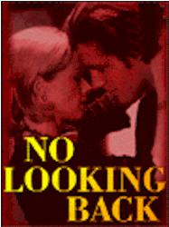

Contents | Features | Reviews | News | Archives | Store |
 |
|
| Movie Credits | Movie Merchandise |
No Looking Back
Review by Elias Savada
Posted 10 April 1998
|  | Directed and Written by Edward Burns Starring
Lauren Holly, Edward Burns, Jon Bon Jovi, |
After such an exciting debut film and a lesser second effort, Edward Burns' third outing (after The Brothers McMullen and She's the One) strikes out. That's it. Dudsville. The film's working title — Long Time, Nothing New — smacks of the truth way beyond what the producers intended. Weak script and limp characters make for a film bordering on the edge of boredom. The writer-director-star's return to the close-knit, blue-collar neighborhood setting that populated his earlier efforts, here a grim oceanside community and its dull populace, generally provide no excitement over the course of the film's blessedly short 96-minutes. At least there are a few Springsteen tunes to help defray the price of admission, but you'd be better off skipping the film and just buying the soundtrack CD.
Burns forever dwells on rainy sidewalks (as in cloudy relationships perhaps?) and bottles of Budweiser (the credits should read An Anheuser-Busch Production) as he tells the story of thirtyish Claudia (Lauren Holly), an indecisive waitress at Chappy's Diner, a local magnet for the town's working class clientele. She's living contentedly with steady boyfriend and factory worker Michael (Jon Bon Jovi), until ex-flame Charlie Ryan (Burns) returns home in an emotionless effort to regain her affections. She's attracted to the aimless wanderer and unfulfilled dreamer, but cautious as he had unceremoniously abandoned after a bungled abortion three years earlier. Should she break from the mold that has become her perhaps dreary life? Or follow her dreams? It doesn't help the filmmaker's cause that he never really tells us what Claudia's aspirations beyond the town's limits might be.
After Charlie's gets a less than cheerful greeting from mom ("Welcome home ... and get that god damn Buick off the lawn!"), he takes a part time job down at the local gas station. Good thing it's not full time, as he mildly stalks Claudia at her house, the diner, the Laundromat, and all the local hangouts until she makes a reluctant decision to go with her hormones instead of her head. This despite the concern of her chain-smoking sister Kelly (Brothers McMullen alumni and Spin City co-star Connie Britton), who is also looking for love while caring for their chain-smoking spaced-out mom (Blythe Danner) as she pines for a (probably chain-smoking) husband that deserted the family for a life in Vegas.
An interesting scene here and there doesn't lift the tedious burden (on the viewer) felt through most of the film. Claudia's realization that she may live the rest of her life chained to the diner (a poignant snippet showing her filing her nails like the older waitress on the other end of the counter) and, later, that possible life on the road with Charlie may not be what she's looking for (a relatively silent post-coital episode in a local motel), at least show that the character can make a decision, even a half-hearted one. Holly's performance shows an attempt to imbue a confused stock character with some life, but it's Burns' fault that she is written so poorly. A tearful moment between Claudia and Michael reveals a great future for the expanding acting career for Bon Jovi, here providing the only three-dimension performance in the film, following up his previously debut in Moonlight and Valentino (1995), and in other smaller pictures.
As Claudia's confusion seemingly lifts like the overcast skies drifting overheard (at one point in the film she's referred to as Cloudia), she makes one of those life-changing decisions that leave everything and everyone far behind. Hopefully she'll get on with her life and we, as filmgoers, won't be bothered with a monotonous sequel to find out she's found peace and happiness in Texas, working as a waitress in some small town diner.
Contents | Features | Reviews | News | Archives | Store
Copyright © 1999 by Nitrate Productions, Inc. All Rights Reserved.